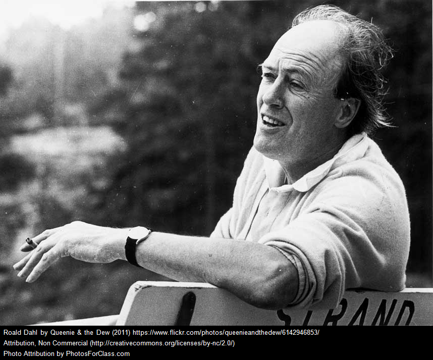

Others
Synopsis
Roald Dahl was born on September 13, 1916, in Llandaff, South Wales. In 1953, he published the best-selling story collection Someone Like You and married actress Patricia Neal. He published the popular book James and the Giant Peach in 1961. In 1964, he released another highly successful work, Charlie and the Chocolate Factory, which was later adapted for two films. Over his decades-long writing career, Dahl wrote 19 children's books. He died on November 23, 1990, in Oxford, England.
His Most Popular Stories
- Charlie and the Chocolate Factory
- The BFG
- George's Marvellous Medicine
- Matilda
- James and the Giant Peach
- The Witches
- Danny the Champion of the World
- Fantastic Mr Fox
- The Magic Finger
- The Twits